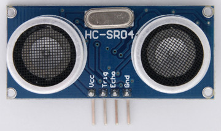
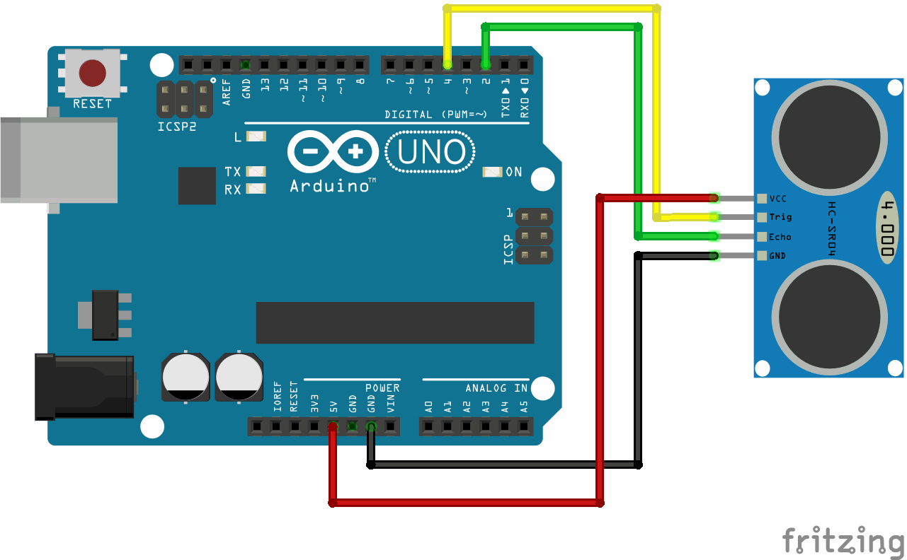
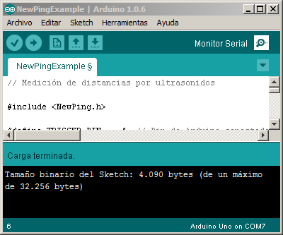
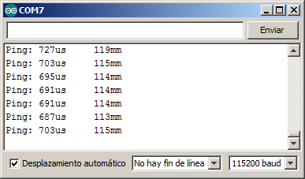

1. Sensor de distància d’ecografia¶
{kind=link}

Els pendents¶
- Comprendre el funcionament del sensor de distància d’ecografia.
- Mesureu les distàncies amb un sensor de distància d’ecografia.
El sensor d’ecografia¶
Aquest sensor té un altaveu petit que emet un pit i un micròfon del sensor que detecta el pit emès. El dispositiu calcula el temps que el so triga a anar a un objecte i tornar reflectit. La distància del sensor a l’objecte es calcula a partir de la velocitat del so a l’aire i el temps que triga a recórrer aquesta distància.
El biscat emès té una freqüència de 40 kHz. Aquesta freqüència està molt per sobre dels 20 kHz, que és la freqüència màxima que els humans poden percebre. Per aquest motiu, aquest so d’alta freqüència s’anomena ultrasons.
Hi ha diversos models de sensors al mercat, els més coneguts i assequibles són el model SR04 i la versió més avançada SRF05. Aquest tutorial explica el model SR04. L’explicació és vàlida per a models més avançats, tenint en compte que tenen una capacitat més gran o característiques afegides.
Característiques del sensor SR04¶
Aquest sensor d’ecografia té les següents característiques:
- Distància de detecció: 2cm - 400cm
- Resolució: 0,3cm
- Freqüència de so: 40kHz
- Angle efectiu: 15º
- Tensió alimentària: 5V
- Consum actual: 15
Biblioteca per a sensors d’ecografia¶
Per gestionar els sensors d’ecografia, hi ha diverses biblioteques de treball. La llibreria estàndard més precisa que es pot utilitzar és newping. Per instal·lar la llibreria, heu de seguir els passos següents:
- Descarregueu la llibreria
- Deseu el fitxer newPing_v1.9.4.zip a l'ordinador
- Obrir l’entorn gràfic d’Arduino
- A la pestanya Sketch .. Importa la llibreria .. Feu clic a "Afegeix la biblioteca ..."
- Cerqueu el fitxer descarregat i després de seleccionar -lo, premeu "Obriu"
- Comproveu -ho a la pestanya Sketch .. Importa biblioteca .. apareix una nova llibreria anomenada Newping
Amb aquests passos, la llibreria s’instal·larà correctament.
Mesura de distàncies¶
Per mesurar les distàncies amb el sensor SR04, es seguiran els passos següents:
Connecteu el sensor SR04 a la placa Arduino segons el següent esquema:

Copieu el programa següent, compileu -lo i descarregueu -lo a la placa Arduino.
1 2 3 4 5 6 7 8 9 10 11 12 13 14 15 16 17 18 19 20 21 22 23 24 25 26 27 28 29 30 31 32
// Medición de distancias por ultrasonidos. // Método basado en la velocidad del sonido. #include <NewPing.h> #define TRIGGER_PIN 4 // Pin de Arduino conectado a la patilla Trigger, en el sensor de ultrasonidos. #define ECHO_PIN 2 // Pin de Arduino conectado a la patilla Echo, en el sensor de ultrasonidos. #define MAX_DISTANCE 200 // Distancia máxima que podrá medir el sensor. // Esta distancia puede llegar a valer 400cm #define SOUND_SPEED 0.171 // La mitad de la velocidad del sonido en el aire, medida en [mm/us] NewPing sonar(TRIGGER_PIN, ECHO_PIN, MAX_DISTANCE); // Configuración de la librería NewPing void setup() { Serial.begin(115200); // Abre las comunicaciones serie entre Arduino y el ordenador } void loop() { int microseconds; // Tiempo que tarda el sonido del sensor en rebotar y volver int distance; // Distancia al obstáculo en centímetros delay(50); // Espera 50 milisegundos entre dos ping consecutivos. // Este tiempo evita errores producidos por el eco. microseconds = sonar.ping(); // Mide el tiempo que tarda el sonido en rebotar distance = microseconds * SOUND_SPEED; // Calcula la distancia al objeto en milímetros Serial.print("Ping: "); // Envía al ordenador un mensaje con la distancia medida Serial.print(microseconds); Serial.print("us\t"); Serial.print(distance); Serial.println("mm"); }
Obriu el monitor de la sèrie (monitor en sèrie) prement la icona que apareix a la dreta a l’entorn gràfic d’Arduino.

A la nova finestra que apareix, trieu la velocitat de transmissió del quadre que apareix a la dreta. En aquest cas, la velocitat programada és de 115200 Baud.
La imatge ha de mostrar contínuament informació de temps i distància.

{kind=link}
En aquest moment, si tot ha anat bé, Arduino mesurarà contínuament la distància entre el sensor i els objectes que es col·loquen davant seu. Aquesta distància s’envia a l’ordinador mitjançant el port sèrie (pel cable USB) per mostrar -lo a la pantalla.
Ajust del sensor¶
L’ajustament del sensor permet que les mesures siguin més exactes. Per ajustar el sensor és necessari corregir diversos paràmetres que puguin influir en l'extensió. La velocitat del so a l’aire, la pressió atmosfèrica, la velocitat del cronòmetre intern del sensor, etc. Per evitar la complexitat d’ajustar -ne un per un tots aquests paràmetres, es farà un ajust anomenat dos punts.
En primer lloc, s’ha de fer una mesura a una distància coneguda, a prop del sensor. Aleshores s’ha de fer una altra mesura a una distància coneguda, més lluny del sensor.
La primera mesura pot corregir el que s’anomena ajust zero. La segona mesura serveix per ajustar la rampa. Les mesures s’han d’introduir en una taula com les següents:
Taula 1.¶ Extensió Temps Distància Mesureu 1 247US 50mm Mesura 2 1123 EUA 200mm
Des d'aquesta taula, podeu fer un millor ajustament de la mesura amb l'ordre map () <https://www.arduino.cc/reference/en/language/funcals/math/map/> `` d'Arduino:
Distància = mapa (microsegons, 247, 1123, 50, 200);
El primer argument és la mesura del temps del sensor. Els dos següents arguments són els temps de rebot a l'objecte proper i llunyà. Els dos següents arguments són les distàncies de l'objecte proper i llunyà.
El programa modificat és el següent.
1 2 3 4 5 6 7 8 9 10 11 12 13 14 15 16 17 18 19 20 21 22 23 24 25 26 27 28 29 30 31 32 33 34 35 36 37 38 | // Medición de distancias por ultrasonidos.
// Método basado en el ajuste de dos puntos.
#include <NewPing.h>
#define TRIGGER_PIN 4 // Pin de Arduino conectado a la patilla Trigger, en el sensor de ultrasonidos.
#define ECHO_PIN 2 // Pin de Arduino conectado a la patilla Echo, en el sensor de ultrasonidos.
#define MAX_DISTANCE 200 // Distancia máxima que podrá medir el sensor.
// Esta distancia puede llegar a valer 400cm
const int time1 = 247; // Tiempo, en microsegundos, del ping al objeto cercano
const int distance1 = 50; // Distancia, en milímetros, al objeto cercano
const int time2 = 1123; // Tiempo, en microsegundos, del ping al objeto lejano
const int distance2 = 200; // Distancia, en milímetros, al objeto lejano
NewPing sonar(TRIGGER_PIN, ECHO_PIN, MAX_DISTANCE); // Configuración de la librería NewPing
int microseconds; // Tiempo que tarda el sonido del sensor en rebotar y volver
int distance; // Distancia al obstáculo en centímetros
void setup() {
Serial.begin(115200); // Abre las comunicaciones serie entre Arduino y el ordenador
}
void loop() {
delay(50); // Espera 50 milisegundos entre dos ping consecutivos.
// Este tiempo evita errores producidos por el eco.
microseconds = sonar.ping(); // Mide el tiempo que tarda el sonido en rebotar
// Calcula con precisión la distancia al objeto en milímetros
distance = map(microseconds, time1, time2, distance1, distance2);
Serial.print("Ping: "); // Envía al ordenador un mensaje con la distancia medida
Serial.print(microseconds);
Serial.print("us\t");
Serial.print(distance);
Serial.println("mm");
}
|
Exercicis¶
Realitzeu mesures per a l’ajust de dos punts amb un sensor específic. Modifiqueu: Ref: Programa anterior <Plentífer-Prog2> Per aconseguir que el sensor torni mesures exactes amb mesures pròpies.
Cada sensor donarà diferents valors per als 4 números de la taula 1, depenent de l’altitud a la qual ens trobem, la temperatura i altres paràmetres del sensor.
Mostra la distància mesurada a la pantalla 7 -segment amb el programa següent.
1 2 3 4 5 6 7 8 9 10 11 12 13 14 15 16 17 18 19 20 21 22 23 24 25 26 27 28 29 30 31
// Medición de distancias por ultrasonidos. // Mostrar el valor de distancia en display de 7 segmentos. #include <Wire.h> #include <PC42.h> #include <NewPing.h> #define TRIGGER_PIN 4 // Pin de Arduino conectado a la patilla Trigger, en el sensor de ultrasonidos. #define ECHO_PIN 2 // Pin de Arduino conectado a la patilla Echo, en el sensor de ultrasonidos. #define MAX_DISTANCE 200 // Distancia máxima que podrá medir el sensor. // Esta distancia puede llegar a valer 400cm #define SOUND_SPEED 0.171 // La mitad de la velocidad del sonido en el aire, medida en [mm/us] NewPing sonar(TRIGGER_PIN, ECHO_PIN, MAX_DISTANCE); // Configuración de la librería NewPing int distance, microseconds; void setup() { pc.begin(); // Inicializar el módulo PC42 }; void loop() { delay(50); // Esperar 50 milisegundos entre dos ping consecutivos. // Este tiempo evita errores producidos por el eco. microseconds = sonar.ping(); // Medir el tiempo que tarda el sonido en rebotar distance = microseconds * SOUND_SPEED; // Calcular la distancia al objeto en milímetros pc.dispWrite(distance); // Mostrar la distancia en el display de 7 segmentos }
Enceneu una barra LEDES que representa la distància d’un objecte al sensor d’ultrasons. Completeu el programa per a la barra ocupada 6 LED.
1 2 3 4 5 6 7 8 9 10 11 12 13 14 15 16 17 18 19 20 21 22 23 24 25 26 27 28 29 30 31 32 33 34 35 36 37 38 39 40 41 42
// Medición de distancias por ultrasonidos. // Mostrar el valor de distancia en display de 7 segmentos. #include <Wire.h> #include <PC42.h> #include <NewPing.h> #define TRIGGER_PIN 4 // Pin de Arduino conectado a la patilla Trigger, en el sensor de ultrasonidos. #define ECHO_PIN 2 // Pin de Arduino conectado a la patilla Echo, en el sensor de ultrasonidos. #define MAX_DISTANCE 200 // Distancia máxima que podrá medir el sensor. // Esta distancia puede llegar a valer 400cm #define SOUND_SPEED 0.171 // La mitad de la velocidad del sonido en el aire, medida en [mm/us] NewPing sonar(TRIGGER_PIN, ECHO_PIN, MAX_DISTANCE); // Configuración de la librería NewPing int microseconds; // Tiempo que tarda el sonido del sensor en rebotar y volver int distance; // Distancia al obstaculo en centímetros void setup() { pc.begin(); // Inicializar el módulo PC42 }; void loop() { delay(50); // Esperar 50 milisegundos entre dos ping consecutivos. // Este tiempo evita errores producidos por el eco. microseconds = sonar.ping(); // Medir el tiempo que tarda el sonido en rebotar distance = microseconds * SOUND_SPEED; // Calcular la distancia al objeto en milímetros // Encender el led 1 si la distancia es mayor de 40mm if (distance > 40) pc.ledWrite(1, LED_ON); else pc.ledWrite(1, LED_OFF); // Encender el led 2 si la distancia es mayor de 80mm if (distance > 80) pc.ledWrite(1, LED_ON); else pc.ledWrite(1, LED_OFF); }